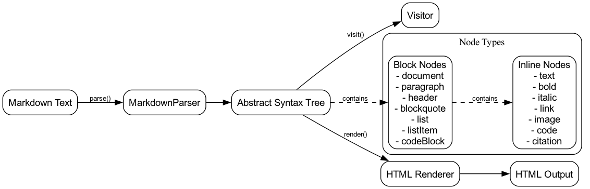

A robust and extensible markdown parser that creates an Abstract Syntax Tree (AST) from markdown text. The parser supports a variety of markdown features and provides a visitor pattern for traversing and transforming the AST.

The Markdown Parser follows a modular architecture that separates concerns into distinct components:
** or __)* or _) `)[text](url) with optional titles) with support for nested brackets)[123])npm install @lbsa71/markdown-parserimport { MarkdownParser } from '@lbsa71/markdown-parser';
const parser = new MarkdownParser();
const ast = parser.parse('# Hello World\n\nThis is a **bold** statement.');
console.log(JSON.stringify(ast, null, 2));The parser generates an AST with two main types of nodes:
document: Root node containing all other nodesparagraph: Basic text containerheader1 through header6: Section headersblockquote: Quoted textcodeBlock: Code blocks with optional languagetext: Plain textbold: Bold textitalic: Italic textcode: Inline codelink: Hyperlinksimage: Imagescitation: Citation referencesThe parser supports a visitor pattern for traversing and transforming the AST:
import { MarkdownParser, NodeType } from '@lbsa71/markdown-parser';
const parser = new MarkdownParser();
const ast = parser.parse('# Title\nHello **world**');
const visited: string[] = [];
const visitor = (type: NodeType) => visited.push(type);
parser.visit(ast, visitor);
// visited = ['document', 'header1', 'text', 'paragraph', 'text', 'bold', 'text']See the examples directory for more detailed usage examples, including:
class MarkdownParser {
constructor(options?: ParserOptions);
parse(input: string): BlockNode;
visit(node: Node, visitor: Visitor): void;
}type NodeType = BlockNodeType | InlineNodeType;
interface Node {
type: NodeType;
content: string;
raw: string;
position: Position;
metadata?: NodeMetadata;
}
type Visitor = (type: NodeType) => void;Contributions are welcome! Please feel free to submit a Pull Request.